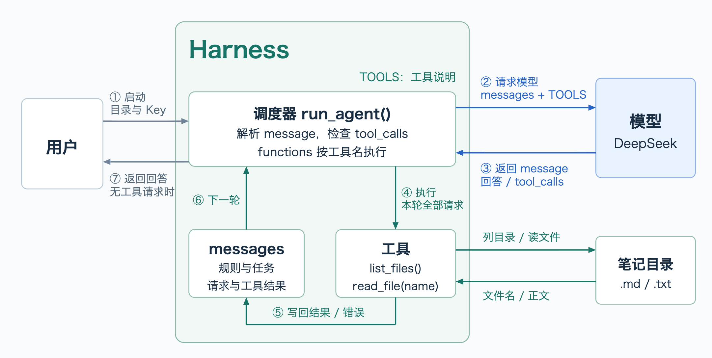
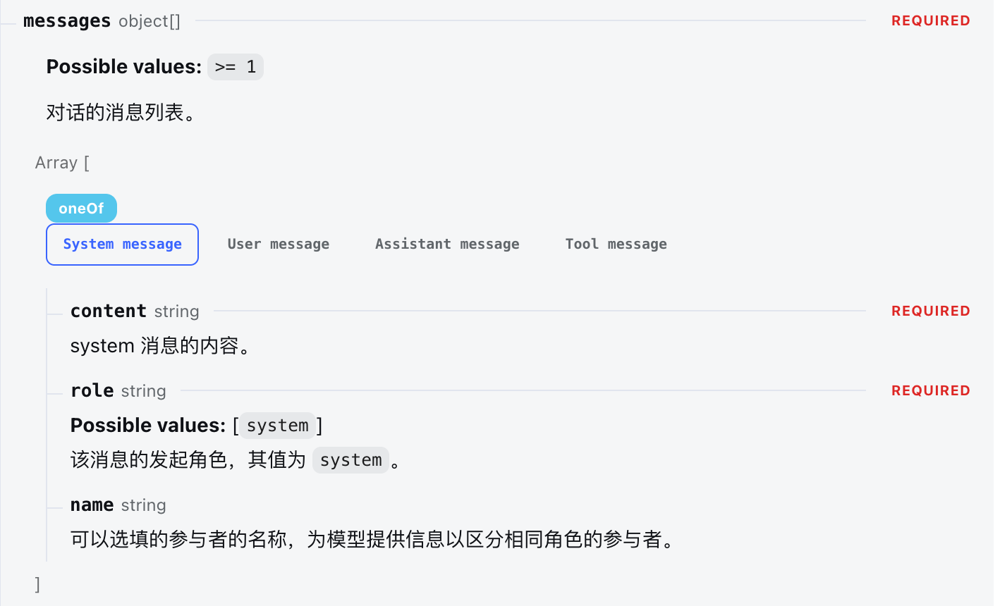
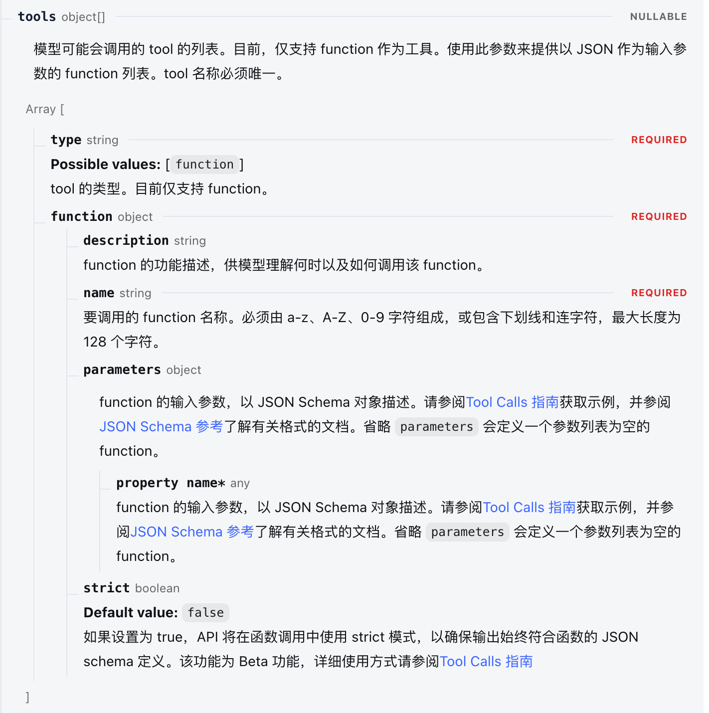
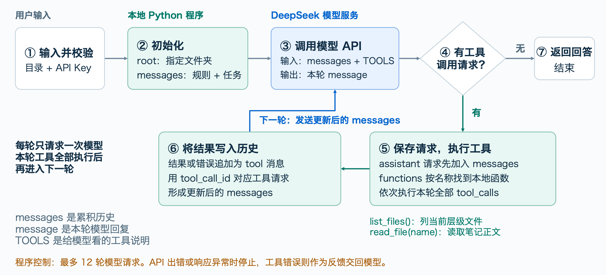

这里通过介绍一个非常简单的 Agent 的实现逻辑，来对 Agent 有基本的了解。
这个简单 Agent 功能是笔记分析，输入是笔记的目录和 DeepSeek API 密钥，输出是对目录下笔记的分析。以下都针对于附件中的 Agent.py 实现进行分析。

上图是该 Agent 的架构。图中的核心组件有两个，一个是 Harness，一个是模型。
模型使用的是 DeepSeek。这里使用 OpenAI SDK 对 DeepSeek 模型进行调用，也可以参考DeepSeek API 文档直接用 requests 库经过 http 进行调用。二者本质一样，OpenAI SDK 就是对后者进行了封装。
messages 和 tools
在工作流之前，先简单了解一下 DeepSeek 提供的 API 接入方式。
官方文档：https://api-docs.deepseek.com/zh-cn/api/create-chat-completion
要请求调用模型，必须提供一些 JSON 结构的信息，其中包含各种参数，其中最重要的两个参数分别是 messages 和 tools。
messages 保存所有轮次的对话的信息，每一次输入都要包含之前所有的历史消息，目的在于为模型提供上下文。系统要求、用户输入、模型输出、工具调用的信息都要以 messages.append() 的形式保存。
tools 是该 harness 提供的工具列表，也必须以文档要求的方式结构化组织。模型会按需要通过函数名和参数进行调用。


工作流
Harness，也可以说 Agent 程序，接收到目录和 DeepSeek API Key 后，传入massages 、tools等参数到 OpenAI 对象来调用模型（如下图）。message 中保存着两条信息，一条是系统对该 agent 的要求，一条是用户要求。
1
2
3
4
5
6
7response = client.chat.completions.create(
model="deepseek-flash",
messages=messages,
tools=TOOLS,
max_tokens=4096,
extra_body={"thinking": {"type": "disabled"}},
)模型服务器接收到的是 JSON 格式的 API 请求，而后将该结构化数据处理为模型能接受的输入。
模型得到输出后也要包装为 JSON 格式返回给 Harness。
Harness 解析得到返回数据中的 tool_call 判断是否需要使用工具。第一轮肯定需要读取目录。
读取后将目录下的列表内容以“tool message”的角色保存到 messages 中，以在第二轮给模型继续解析。
进行下一轮模型调用，调用和第一轮一样，不同点在于这次 messages 中更新了目录下的文件列表。
（第二轮模型会通过这些目录列出需要调用的工具。
这里可能会为好几轮对目录中的文件进行读取，分为几轮调用是由模型决定的。通过文件系统读取得到的文件内容也要放进 messages 中。
当读取完文件内容后进入最后一轮调用，这次模型阅读所有笔记并给出笔记分析。）循环结束后返回输出给用户
（模型的调用是一个循环。模型的返回中有一个字段为“finish_reason”。
结束循坏条件就是当该字段为“stop”，stop 代表模型自然结束生成；
或者达到 Harness 规定的最大调用次数，避免无限循环下去。）
P.S. 这里的目录下笔记的读取是非递归的，这是由 Harness 实现的函数决定的：
1 | def list_files(): |
上图是架构图，以下是流程图，流程与上图不完全相同，供参考：
